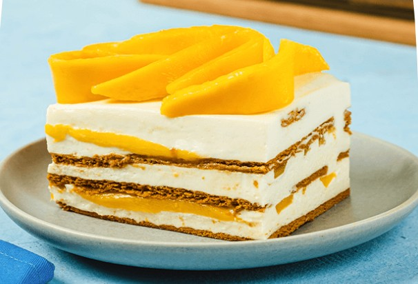

Mango float is a popular no-bake dessert from the Philippines. It is known for its creamy texture, sweet ripe mangoes, and layers of soft graham crackers.
This chilled dessert is simple to prepare and perfect for warm days, making it a favorite for family gatherings and celebrations.
Mix the all-purpose cream and condensed milk in a bowl until smooth and well combined.
Start with graham crackers at the bottom of a container, followed by cream mixture and mango slices. Repeat the layers until all ingredients are used.
Refrigerate for at least 4 hours or overnight to let the layers set properly.